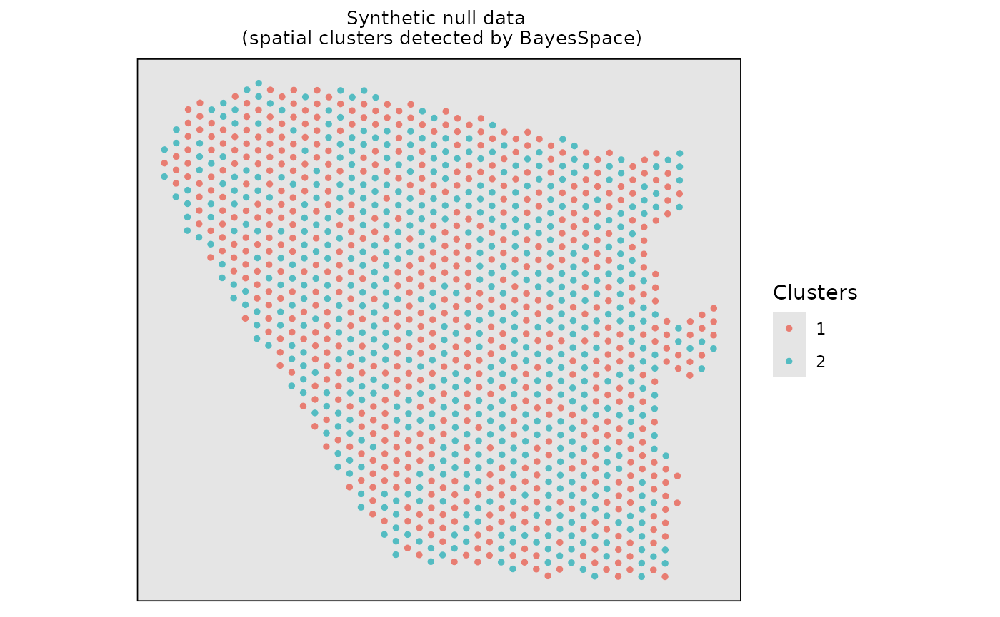
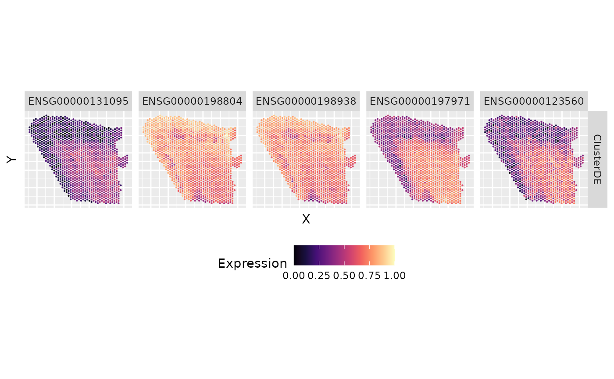

Perform ClusterDE on a two-domain spatial dataset
Siqi Chen
Computer Science, Central South Universitysiqichen4477@gmail.com
Dongyuan Song
Bioinformatics IDP, University of California, Los Angelesdongyuansong@ucla.edu
3 July 2024
Source:vignettes/ClusterDE-twodomains.Rmd
ClusterDE-twodomains.Rmd
#tools::R_user_dir("ClusterDE", which="cache")
library(Seurat)
library(SingleCellExperiment)
library(spatialLIBD)
library(ggplot2)
library(ClusterDE)
library(BayesSpace)
library(dplyr)
library(scales)Download data
We selected adjacent layer 6 and WM of 151673 slice from the LIBD Human Dorsolateral Prefrontal Cortex (DLPFC) dataset, which is downloaded in the spatialLIBD R package. We removed the genes expressed in fewer than 20% spots to save computational time here.
### Download the spot-level data
spe <- fetch_data(type = "spe")
#> 2024-07-03 22:49:47.545081 loading file /home/runner/.cache/R/BiocFileCache/82707cd51152_Human_DLPFC_Visium_processedData_sce_scran_spatialLIBD.Rdata%3Fdl%3D1
### Select the Layer6 and WM domains in the slice "151673"
sub_151673 <- spe[, spe$sample_id == "151673"]
index <- sub_151673$spatialLIBD == "L6"|sub_151673$spatialLIBD == "WM"
index[which(is.na(index))] <- "NAN"
sub_151673 <- sub_151673[, index=="TRUE"]
print(sub_151673)
#> class: SpatialExperiment
#> dim: 33538 1205
#> metadata(0):
#> assays(2): counts logcounts
#> rownames(33538): ENSG00000243485 ENSG00000237613 ... ENSG00000277475
#> ENSG00000268674
#> rowData names(9): source type ... gene_search is_top_hvg
#> colnames(1205): AAACACCAATAACTGC-1 AAACAGGGTCTATATT-1 ...
#> TTGTTTCCATACAACT-1 TTGTTTGTATTACACG-1
#> colData names(69): sample_id Cluster ... array_row array_col
#> reducedDimNames(6): PCA TSNE_perplexity50 ... TSNE_perplexity80
#> UMAP_neighbors15
#> mainExpName: NULL
#> altExpNames(0):
#> spatialCoords names(2) : pxl_col_in_fullres pxl_row_in_fullres
#> imgData names(4): sample_id image_id data scaleFactor
# Delete the genes that express rate less than 20%
data <- sub_151673@assays@data$counts
zero_expre_rate <- apply(data,1,function(x){
zero_true<-x==0
zero_num<-length(which(zero_true==TRUE))/dim(data)[2]
return(zero_num)
})
zero_expre_gene_idx <- which(zero_expre_rate<0.8)
sub_151673 <- sub_151673[zero_expre_gene_idx,]
cat(paste0("The size of data: ",dim(sub_151673)[1],"*",dim(sub_151673)[2],sep=""))
#> The size of data: 2801*1205
###construct the SingleCellExperiment object
real_sce <- SingleCellExperiment(list(counts=sub_151673@assays@data$counts))
###add colData information of singlecellexperiment
real_sce$spatial1 <- sub_151673@int_colData@listData$spatialCoords[,2]
real_sce$spatial2 <- sub_151673@int_colData@listData$spatialCoords[,1]
real_sce$cell_type <- sub_151673@colData$spatialLIBD
###visualize the real spatial domains
real_sce_domains <- data.frame(Xaxis=real_sce$spatial1,Yaxis=real_sce$spatial2,Domains=real_sce$cell_type)
ggplot(real_sce_domains, aes(x = Xaxis, y = Yaxis, col =Domains)) + geom_point(size=1.0) + coord_equal() +
ggtitle("Manual annotation \n (The layer6 and WM in the slice 151673)") +
#scale_color_brewer(palette = "Accent") +
theme(plot.title = element_text(size=10,hjust=0.5),
panel.grid=element_blank(),
panel.background = element_rect(fill = "gray90"),
panel.border = element_rect(color = "black", fill = NA, linewidth = 0.6),
axis.title.x = element_blank(),
axis.title.y = element_blank(),
axis.ticks.x = element_blank(),
axis.ticks.y = element_blank(),
axis.text.x = element_blank(),
axis.text.y = element_blank()) + scale_color_manual(values = c("#5791cc","#403f92"))Run the BayesSpace + Seurat pipeline
Firstly, we employed the BayesSpace for spatial clustering. Please note that ClusterDE is designed for 1 vs 1 comparison; therefore, we obtain two spatial clusters for illustration purpose.
###construct the input of BayesSpace based on real dataset
#the input of BayesSpace is sce object
real_sce_clu <- SingleCellExperiment(list(counts=real_sce@assays@data$counts))
# add colData information of singlecellexperiment
real_sce_clu$row <- real_sce$spatial1
real_sce_clu$col <- real_sce$spatial2
## log-normalize the count data
set.seed(102)
real_sce_clu <- spatialPreprocess(real_sce_clu, platform="ST", n.PCs=7,log.normalize=TRUE)
#clustering with BayesSpace
set.seed(149)
real_sce_clu <- spatialCluster(real_sce_clu, q=2, platform="ST", d=7,
init.method="mclust", model="t", gamma=2,
nrep=1000, burn.in=100,
save.chain=TRUE)
#> Neighbors were identified for 0 out of 1205 spots.
#> Fitting model...
#> You created a large dataset with compression and chunking.
#> The chunk size is equal to the dataset dimensions.
#> If you want to read subsets of the dataset, you should testsmaller chunk sizes to improve read times.
#> You created a large dataset with compression and chunking.
#> The chunk size is equal to the dataset dimensions.
#> If you want to read subsets of the dataset, you should testsmaller chunk sizes to improve read times.
#> Calculating labels using iterations 100 through 1000.
#visualize the spatial cluster
real_sce_spatial_clu <- data.frame(Xaxis=real_sce_clu$row,Yaxis=real_sce_clu$col,Clusters=as.character(real_sce_clu$spatial.cluster))
ggplot(real_sce_spatial_clu, aes(x = Xaxis, y = Yaxis, col =Clusters)) + geom_point(size=1.0) + coord_equal() +
ggtitle("Real data \n (spatial clusters detected by BayesSpace)") +
#scale_color_brewer(palette = "Accent") +
theme(plot.title = element_text(size=10,hjust=0.5),
panel.grid=element_blank(),
panel.background = element_rect(fill = "gray90"),
panel.border = element_rect(color = "black", fill = NA, size = 0.6),
axis.title.x = element_blank(),
axis.title.y = element_blank(),
axis.ticks.x = element_blank(),
axis.ticks.y = element_blank(),
axis.text.x = element_blank(),
axis.text.y = element_blank()) + scale_color_manual(values = c("#e87d72","#54bcc2"))
#> Warning: The `size` argument of `element_rect()` is deprecated as of ggplot2 3.4.0.
#> ℹ Please use the `linewidth` argument instead.
#> This warning is displayed once every 8 hours.
#> Call `lifecycle::last_lifecycle_warnings()` to see where this warning was
#> generated.Then, we used the common DE method (Wilcoxon Rank Sum Test) to identify domain marker genes between the two spatial clusters.
#Identify domain marker genes in the real dataset based on the BayesSpace clustering result, follow Seurat tutorial
#create Seurat object
real_count_dataset <- real_sce@assays@data$counts
real_seurat <- CreateSeuratObject(counts = real_count_dataset, project = "real_seurat", min.cells = 0, min.features = 0)
real_seurat[["percent.mt"]] <- PercentageFeatureSet(real_seurat, pattern = "^MT-")
real_seurat <- NormalizeData(real_seurat, normalization.method = "LogNormalize", scale.factor = 10000)
#> Normalizing layer: counts
real_seurat <- ScaleData(real_seurat, features = rownames(real_seurat))
#> Centering and scaling data matrix
real_ct <-real_sce_clu$spatial.cluster
names(real_ct) <- colnames(real_sce)
real_seurat[["cell_type"]] <- real_ct
Idents(real_seurat) <- "cell_type"
#Then we follow seurat tutorial to conduct DE analysis
real_markers <- FindMarkers(object = real_seurat, ident.1 = unique(real_ct)[1], ident.2 = unique(real_ct)[2], test.use = "wilcox",logfc.threshold = 0, min.pct = 0, min.cells.feature = 1, min.cells.group = 1)
#> For a (much!) faster implementation of the Wilcoxon Rank Sum Test,
#> (default method for FindMarkers) please install the presto package
#> --------------------------------------------
#> install.packages('devtools')
#> devtools::install_github('immunogenomics/presto')
#> --------------------------------------------
#> After installation of presto, Seurat will automatically use the more
#> efficient implementation (no further action necessary).
#> This message will be shown once per sessionPerform ClusterDE analysis
We first generate the synthetic null data based on the real data (target data). You can increase the number of cores to speed it up using the parameter “nCores”.
###generate synthetic null data
count_mat <- real_sce@assays@data$counts
location_mat <- data.frame(X=real_sce$spatial1,Y=real_sce$spatial2)
system.time(null_twodomain_dataset <- ClusterDE::constructNull(mat=count_mat,
family = "nb",
extraInfo=location_mat,
formula = "s(X, Y, bs = 'gp', k= 4)",
nCores = 2))
#> Registered S3 method overwritten by 'gamlss':
#> method from
#> print.ri bit
#> Registered S3 method overwritten by 'scDesign3':
#> method from
#> predict.gamlss gamlss
#> Input Data Construction Start
#> Input Data Construction End
#> Start Marginal Fitting
#> Marginal Fitting End
#> Start Copula Fitting
#> Convert Residuals to Multivariate Gaussian
#> Converting End
#> Copula group 1 starts
#> Copula Fitting End
#> Start Parameter Extraction
#> Parameter
#> Extraction End
#> Start Generate New Data
#> Use Copula to sample a multivariate quantile matrix
#> Sample Copula group 1 starts
#> New Data Generating End
#> user system elapsed
#> 1984.368 1698.802 1039.055We perform the same pipeline as we did for target data. Please note we need two spatial clusters here, too.
###construct the input of BayesSpace based on null dataset######
null_sce <- SingleCellExperiment(list(counts =null_twodomain_dataset))
# add colData information of singlecellexperiment
null_sce$row <- real_sce$spatial1
null_sce$col <- real_sce$spatial2
## log-normalize the count data
set.seed(102)
null_sce<- spatialPreprocess(null_sce, platform="ST", n.PCs=7,log.normalize=TRUE)
#clustering with BayesSpace
set.seed(149)
null_sce <- spatialCluster(null_sce, q=2, platform="ST", d=7,
init.method="mclust", model="t", gamma=2,
nrep=1000, burn.in=100,
save.chain=TRUE)
#> Neighbors were identified for 0 out of 1205 spots.
#> Fitting model...
#> You created a large dataset with compression and chunking.
#> The chunk size is equal to the dataset dimensions.
#> If you want to read subsets of the dataset, you should testsmaller chunk sizes to improve read times.
#> You created a large dataset with compression and chunking.
#> The chunk size is equal to the dataset dimensions.
#> If you want to read subsets of the dataset, you should testsmaller chunk sizes to improve read times.
#> Calculating labels using iterations 100 through 1000.
#visualize the spatial cluster
null_spatial_clu <- data.frame(Xaxis=null_sce$row,Yaxis=null_sce$col,Clusters=as.character(null_sce$spatial.cluster))
ggplot(null_spatial_clu, aes(x = Xaxis, y = Yaxis, col =Clusters)) + geom_point(size=1.0) + coord_equal() +
ggtitle("Synthetic null data \n (spatial clusters detected by BayesSpace)") +
#scale_color_brewer(palette = "Accent") +
theme(plot.title = element_text(size=10,hjust=0.5),
panel.grid=element_blank(),
panel.background = element_rect(fill = "gray90"),
panel.border = element_rect(color = "black", fill = NA, size = 0.6),
axis.title.x = element_blank(),
axis.title.y = element_blank(),
axis.ticks.x = element_blank(),
axis.ticks.y = element_blank(),
axis.text.x = element_blank(),
axis.text.y = element_blank()) + scale_color_manual(values = c("#e87d72","#54bcc2")) Visualize the spatial clustering results based on the synthetic null data.
Perform the common DE test (Wilcoxon Rank Sum Test) on synthetic null data.
#Identify domain marker genes in the synthetic null dataset based on the BayesSpace clustering result, follow Seurat tutorial
#create Seurat object
null_count_dataset <- null_twodomain_dataset
null_seurat <- CreateSeuratObject(counts = null_count_dataset, project = "null_seurat", min.cells = 0, min.features = 0)
null_seurat[["percent.mt"]] <- PercentageFeatureSet(null_seurat, pattern = "^MT-")
null_seurat <- NormalizeData(null_seurat, normalization.method = "LogNormalize", scale.factor = 10000)
#> Normalizing layer: counts
null_seurat <- ScaleData(null_seurat, features = rownames(null_seurat))
#> Centering and scaling data matrix
null_ct <- null_sce$spatial.cluster
names(null_ct) <- colnames(null_sce)
null_seurat[["cell_type"]] <- null_ct
Idents(null_seurat) <- "cell_type"
#Then we follow seurat tutorial to conduct DE analysis
null_markers <- FindMarkers(object = null_seurat, ident.1 = unique(null_ct)[1], ident.2 = unique(null_ct)[2], test.use = "wilcox",logfc.threshold = 0, min.pct = 0, min.cells.feature = 1, min.cells.group = 1)
null_pvals <- null_markers[rownames(null_seurat),"p_val"]
names(null_pvals) <- rownames(null_seurat)We extract the p-values from both target data and synthetic null
data, then use ClusterDE to “compare” them.
###you can set the value of FDR, the default value is 0.05
res <- ClusterDE::callDE(real_pvals, null_pvals, nlogTrans = TRUE)
cat(paste0("The number of domain marker genes is: ",length(res$DEgenes),sep=""))
#> The number of domain marker genes is: 824We visualize the top DE genes from ClusterDE. As expected, the top genes detected by ClusterDE exhibit clear spatial expression patterns.
Visualize top marker genes
expression_dat_test <- data.frame(scales::rescale(as.matrix(t(log1p(counts(real_sce)))))) %>% as_tibble() %>% dplyr::mutate(X = colData(real_sce)$spatial1, Y = colData(real_sce)$spatial2) %>% tidyr::pivot_longer(-c("X", "Y"), names_to = "Gene", values_to = "Expression")
top_DE_ClusterDE <- res$DEgenes
p_topGenes <- expression_dat_test %>% as_tibble() %>% dplyr::mutate(Method = "ClusterDE") %>% filter(Gene %in% top_DE_ClusterDE[1:5]) %>% dplyr::mutate(Gene = factor(Gene, levels = top_DE_ClusterDE[1:5])) %>% ggplot(aes(x = X, y = Y, color = Expression)) + geom_point(size = 0.1) + scale_colour_gradientn(colors = viridis_pal(option = "magma")(10)) + coord_fixed(ratio = 1) + facet_grid(Method ~ Gene)+ theme_gray() + theme(axis.text.x = element_blank(), axis.text.y = element_blank(), axis.ticks.x = element_blank(), axis.ticks.y = element_blank(), legend.position = "bottom")
p_topGenes
Session information
sessionInfo()
#> R version 4.4.1 (2024-06-14)
#> Platform: x86_64-pc-linux-gnu
#> Running under: Ubuntu 22.04.4 LTS
#>
#> Matrix products: default
#> BLAS: /usr/lib/x86_64-linux-gnu/openblas-pthread/libblas.so.3
#> LAPACK: /usr/lib/x86_64-linux-gnu/openblas-pthread/libopenblasp-r0.3.20.so; LAPACK version 3.10.0
#>
#> locale:
#> [1] LC_CTYPE=C.UTF-8 LC_NUMERIC=C LC_TIME=C.UTF-8
#> [4] LC_COLLATE=C.UTF-8 LC_MONETARY=C.UTF-8 LC_MESSAGES=C.UTF-8
#> [7] LC_PAPER=C.UTF-8 LC_NAME=C LC_ADDRESS=C
#> [10] LC_TELEPHONE=C LC_MEASUREMENT=C.UTF-8 LC_IDENTIFICATION=C
#>
#> time zone: UTC
#> tzcode source: system (glibc)
#>
#> attached base packages:
#> [1] stats4 stats graphics grDevices utils datasets methods
#> [8] base
#>
#> other attached packages:
#> [1] scales_1.3.0 dplyr_1.1.4
#> [3] BayesSpace_1.14.0 ClusterDE_0.99.3
#> [5] ggplot2_3.5.1 spatialLIBD_1.16.2
#> [7] SpatialExperiment_1.14.0 SingleCellExperiment_1.26.0
#> [9] SummarizedExperiment_1.34.0 Biobase_2.64.0
#> [11] GenomicRanges_1.56.1 GenomeInfoDb_1.40.1
#> [13] IRanges_2.38.0 S4Vectors_0.42.0
#> [15] BiocGenerics_0.50.0 MatrixGenerics_1.16.0
#> [17] matrixStats_1.3.0 Seurat_5.1.0
#> [19] SeuratObject_5.0.2 sp_2.1-4
#> [21] BiocStyle_2.32.1
#>
#> loaded via a namespace (and not attached):
#> [1] DirichletReg_0.7-1 goftest_1.2-3
#> [3] gamlss_5.4-22 DT_0.33
#> [5] Biostrings_2.72.1 vctrs_0.6.5
#> [7] spatstat.random_3.2-3 digest_0.6.36
#> [9] png_0.1-8 ggrepel_0.9.5
#> [11] deldir_2.0-4 parallelly_1.37.1
#> [13] magick_2.8.3 MASS_7.3-60.2
#> [15] pkgdown_2.0.9 reshape2_1.4.4
#> [17] scDesign3_1.1.3 httpuv_1.6.15
#> [19] foreach_1.5.2 withr_3.0.0
#> [21] xfun_0.45 survival_3.6-4
#> [23] memoise_2.0.1 benchmarkme_1.0.8
#> [25] ggbeeswarm_0.7.2 systemfonts_1.1.0
#> [27] ragg_1.3.2 zoo_1.8-12
#> [29] pbapply_1.7-2 Formula_1.2-5
#> [31] rematch2_2.1.2 KEGGREST_1.44.1
#> [33] promises_1.3.0 httr_1.4.7
#> [35] restfulr_0.0.15 globals_0.16.3
#> [37] fitdistrplus_1.1-11 rhdf5filters_1.16.0
#> [39] rhdf5_2.48.0 UCSC.utils_1.0.0
#> [41] miniUI_0.1.1.1 generics_0.1.3
#> [43] curl_5.2.1 fields_16.2
#> [45] zlibbioc_1.50.0 ScaledMatrix_1.12.0
#> [47] polyclip_1.10-6 GenomeInfoDbData_1.2.12
#> [49] ExperimentHub_2.12.0 SparseArray_1.4.8
#> [51] golem_0.4.1 xtable_1.8-4
#> [53] stringr_1.5.1 desc_1.4.3
#> [55] doParallel_1.0.17 evaluate_0.24.0
#> [57] S4Arrays_1.4.1 BiocFileCache_2.12.0
#> [59] bookdown_0.40 irlba_2.3.5.1
#> [61] colorspace_2.1-0 filelock_1.0.3
#> [63] ROCR_1.0-11 reticulate_1.38.0
#> [65] spatstat.data_3.1-2 shinyWidgets_0.8.6
#> [67] magrittr_2.0.3 lmtest_0.9-40
#> [69] later_1.3.2 viridis_0.6.5
#> [71] lattice_0.22-6 spatstat.geom_3.2-9
#> [73] future.apply_1.11.2 scattermore_1.2
#> [75] XML_3.99-0.17 scuttle_1.14.0
#> [77] cowplot_1.1.3 RcppAnnoy_0.0.22
#> [79] pillar_1.9.0 nlme_3.1-164
#> [81] iterators_1.0.14 compiler_4.4.1
#> [83] beachmat_2.20.0 RSpectra_0.16-1
#> [85] stringi_1.8.4 tensor_1.5
#> [87] GenomicAlignments_1.40.0 plyr_1.8.9
#> [89] crayon_1.5.3 abind_1.4-5
#> [91] BiocIO_1.14.0 scater_1.32.0
#> [93] locfit_1.5-9.10 bit_4.0.5
#> [95] sandwich_3.1-0 codetools_0.2-20
#> [97] textshaping_0.4.0 BiocSingular_1.20.0
#> [99] coop_0.6-3 bslib_0.7.0
#> [101] paletteer_1.6.0 plotly_4.10.4
#> [103] mime_0.12 splines_4.4.1
#> [105] Rcpp_1.0.12 fastDummies_1.7.3
#> [107] dbplyr_2.5.0 sparseMatrixStats_1.16.0
#> [109] attempt_0.3.1 maxLik_1.5-2.1
#> [111] knitr_1.47 blob_1.2.4
#> [113] utf8_1.2.4 BiocVersion_3.19.1
#> [115] fs_1.6.4 listenv_0.9.1
#> [117] DelayedMatrixStats_1.26.0 tibble_3.2.1
#> [119] Matrix_1.7-0 statmod_1.5.0
#> [121] pkgconfig_2.0.3 tools_4.4.1
#> [123] cachem_1.1.0 RSQLite_2.3.7
#> [125] viridisLite_0.4.2 DBI_1.2.3
#> [127] fastmap_1.2.0 rmarkdown_2.27
#> [129] grid_4.4.1 ica_1.0-3
#> [131] Rsamtools_2.20.0 AnnotationHub_3.12.0
#> [133] sass_0.4.9 patchwork_1.2.0
#> [135] coda_0.19-4.1 BiocManager_1.30.23
#> [137] dotCall64_1.1-1 RANN_2.6.1
#> [139] farver_2.1.2 mgcv_1.9-1
#> [141] yaml_2.3.8 rtracklayer_1.64.0
#> [143] cli_3.6.3 purrr_1.0.2
#> [145] leiden_0.4.3.1 lifecycle_1.0.4
#> [147] uwot_0.2.2 mvtnorm_1.2-5
#> [149] bluster_1.14.0 sessioninfo_1.2.2
#> [151] BiocParallel_1.38.0 gtable_0.3.5
#> [153] rjson_0.2.21 ggridges_0.5.6
#> [155] gamlss.dist_6.1-1 progressr_0.14.0
#> [157] parallel_4.4.1 limma_3.60.3
#> [159] jsonlite_1.8.8 edgeR_4.2.0
#> [161] miscTools_0.6-28 RcppHNSW_0.6.0
#> [163] bitops_1.0-7 benchmarkmeData_1.0.4
#> [165] bit64_4.0.5 assertthat_0.2.1
#> [167] xgboost_1.7.7.1 Rtsne_0.17
#> [169] spatstat.utils_3.0-5 BiocNeighbors_1.22.0
#> [171] jquerylib_0.1.4 highr_0.11
#> [173] metapod_1.12.0 config_0.3.2
#> [175] dqrng_0.4.1 lazyeval_0.2.2
#> [177] shiny_1.8.1.1 htmltools_0.5.8.1
#> [179] sctransform_0.4.1 rappdirs_0.3.3
#> [181] glue_1.7.0 spam_2.10-0
#> [183] XVector_0.44.0 RCurl_1.98-1.14
#> [185] scran_1.32.0 mclust_6.1.1
#> [187] gridExtra_2.3 igraph_2.0.3
#> [189] R6_2.5.1 tidyr_1.3.1
#> [191] labeling_0.4.3 cluster_2.1.6
#> [193] Rhdf5lib_1.26.0 gamlss.data_6.0-6
#> [195] DelayedArray_0.30.1 tidyselect_1.2.1
#> [197] vipor_0.4.7 maps_3.4.2
#> [199] AnnotationDbi_1.66.0 future_1.33.2
#> [201] rsvd_1.0.5 munsell_0.5.1
#> [203] KernSmooth_2.23-24 data.table_1.15.4
#> [205] htmlwidgets_1.6.4 RColorBrewer_1.1-3
#> [207] rlang_1.1.4 spatstat.sparse_3.1-0
#> [209] spatstat.explore_3.2-7 fansi_1.0.6
#> [211] beeswarm_0.4.0